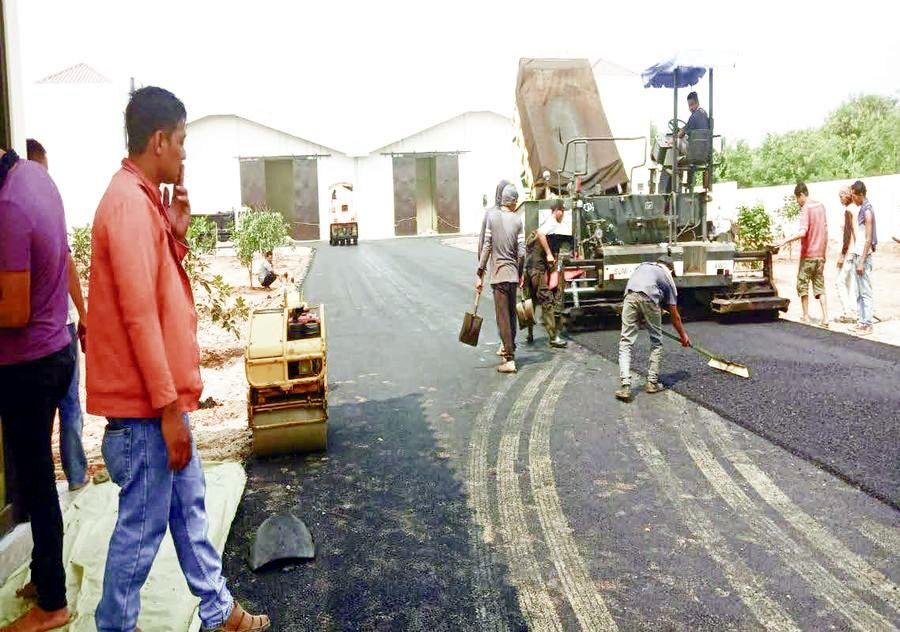

Konstruksi & Infrastruktur · Sejak 2022
Membangun kokoh,
menuntaskan dengan presisi.
PT. Diande Putra Mandiri melayani pekerjaan konstruksi gedung, konstruksi khusus, hingga penyiapan lahan di Jabodetabek dan Jawa Barat — didukung tim berpengalaman dan tenaga ahli bersertifikat.




berdiri
Jelajahi
Setiap topik punya halamannya sendiri.
Profil, layanan, portofolio, klien, legalitas, dan kontak tersedia pada halaman terpisah sehingga lebih mudah dibuka dan dibagikan.
Tentang Kami
Profil perseroan, nilai kerja, data perusahaan, dan struktur organisasi.
Buka halaman 02Layanan
Enam bidang usaha: gedung, konstruksi khusus, angkutan, sewa alat, pekerjaan tanah, dan perkerasan.
Buka halaman 03Proyek
Portofolio pekerjaan yang terdokumentasi, dapat difilter menurut kategori.
Buka halaman 04Klien & Mitra
Perusahaan dan instansi yang mempercayakan pekerjaannya kepada kami.
Buka halaman 05Legalitas
Akta, perizinan, komposisi modal, dan laporan tahunan perseroan.
Buka halaman 06Kontak
Alamat kantor, telepon/WhatsApp, email, dan formulir kebutuhan proyek.
Buka halaman